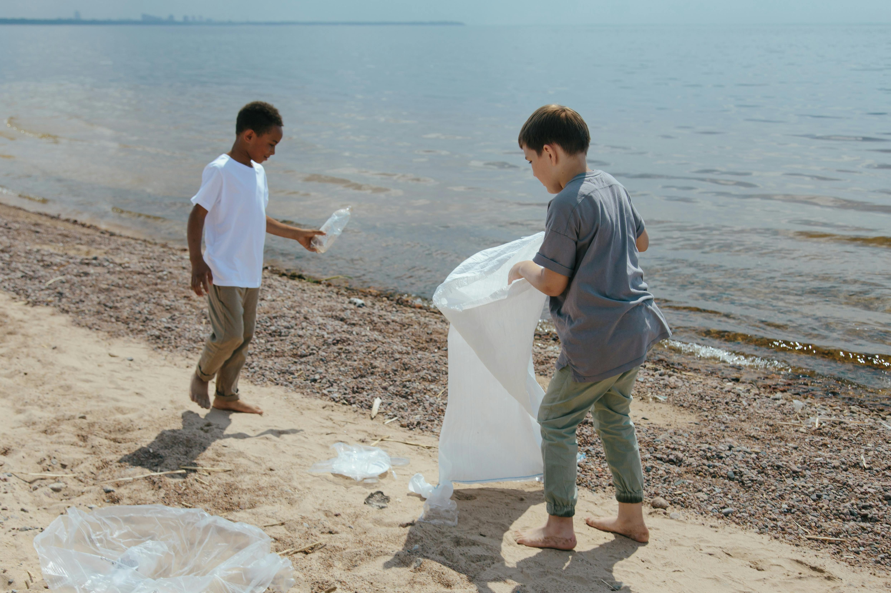
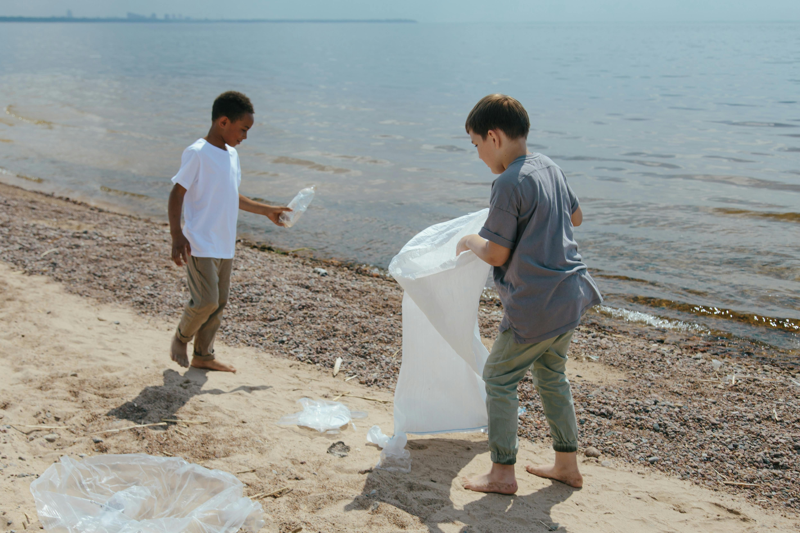
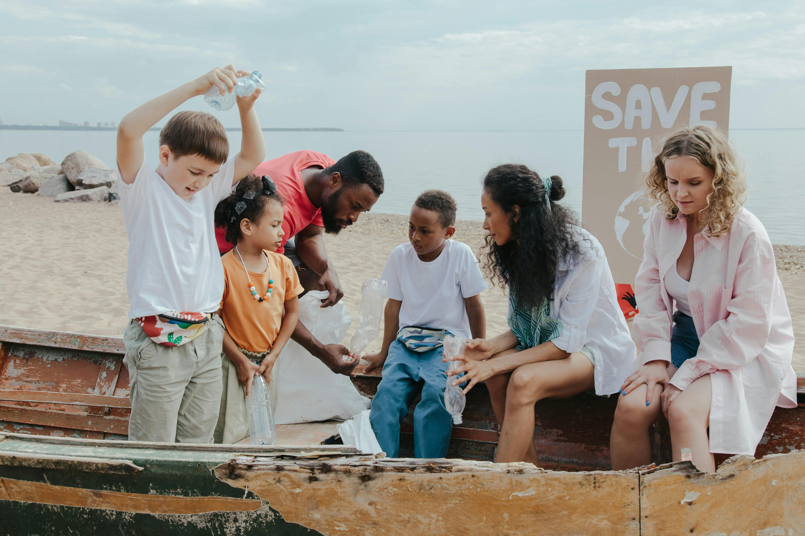
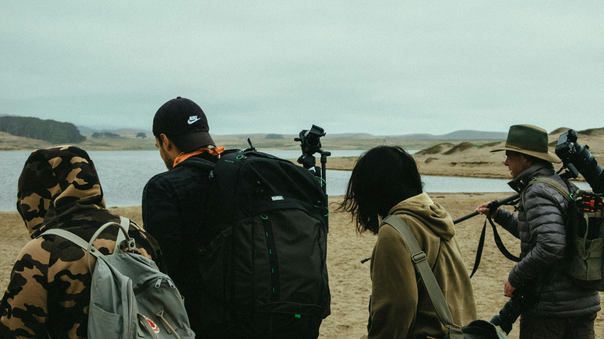
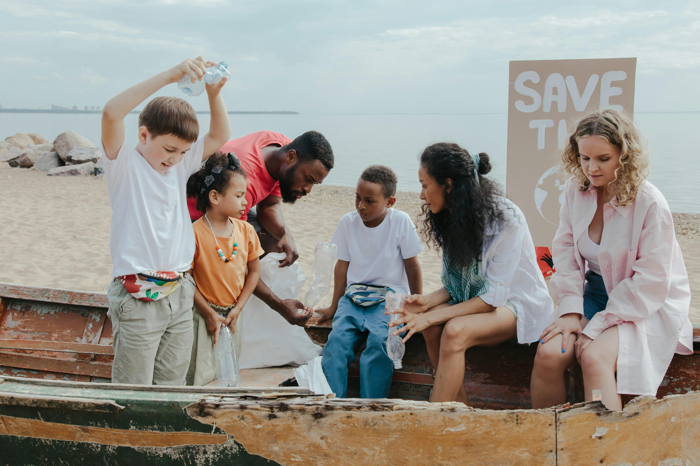
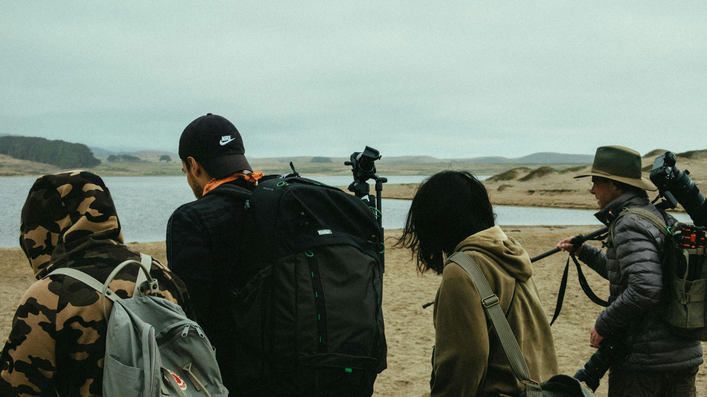

 




Projetos em destaque
Proteção das Desovas
Acompanhamento e proteção dos ninhos de tartarugas na Praia do Sol.
Educação Ambiental
Palestras e oficinas em escolas e comunidades sobre preservação do oceano.
Limpeza de Praias
Mutirões de voluntários para limpeza e conscientização ambiental nas praias.
Como ajudar
💙
Faça uma doação
Ajude nosso trabalho de proteção a continuar e crescer. Qualquer valor faz diferença.
📢
Compartilhe
Divulgue nossos projetos nas redes sociais e amplie nossa mensagem!